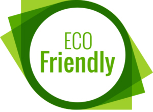

<section>
</img>
<p>         Do you own a renewable source of energy? 

                              If not, this is what you need to know.. 

    Renewable energy is economically safe, cheap and trustworthy, allowing you,
      Yes you to get the most out of your money. Allowing for you to help the 
      environment. There are so many different forms of creating / producing
     of renewable energy.  there is solar power via solar panels, wind turbine,
                   hydro power from water turbines and so many more.
       The only fault in these sources of renewable power sources is the space 
           which you will give up, but it is at such a benifical cost, safer in 
       comparison to the use of fossil fuels for say, which pollute the air with
     carbon emotions causing gaping in the ozone layer and increasing the rate 
    that global warming is occurring. Renewable sources is also more appealing
    over fossil fuels as it allows for the air in which you breath to be clean and
                 not polluted with carbon dioxide and methane emissions.    </p>
</section>